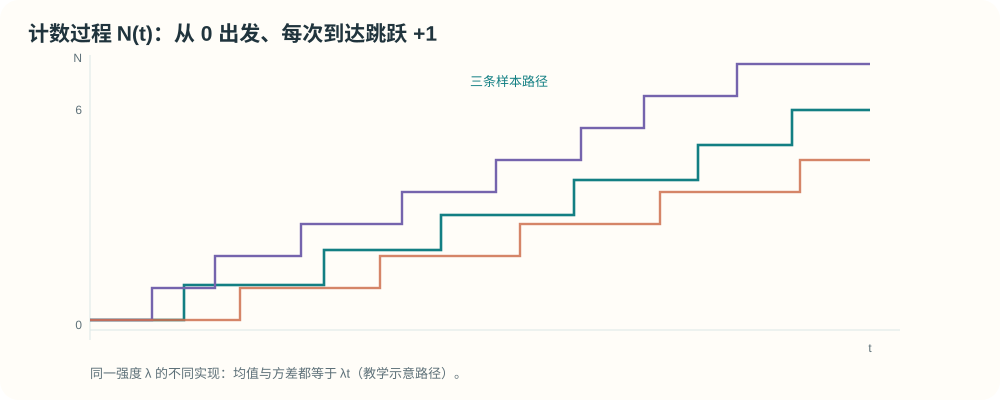
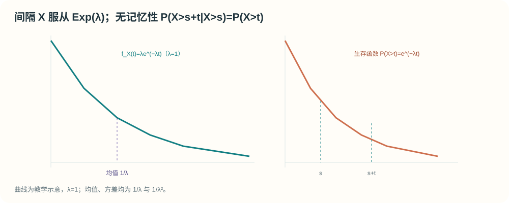
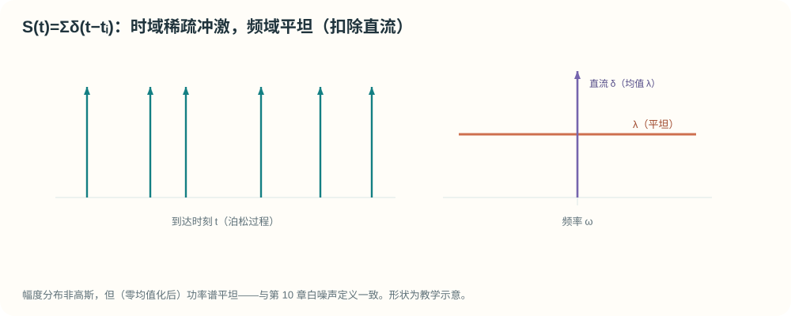
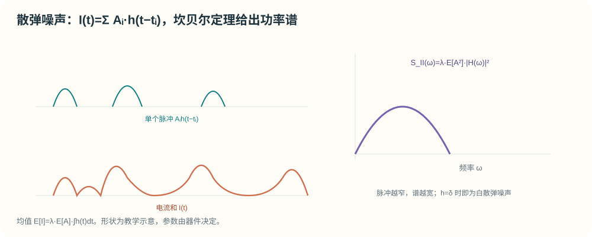

CHAPTER 19 · 系统与模型
泊松过程与散弹噪声
从离散状态跳到连续时间：当事件“独立且平稳地到达”，计数就服从泊松分布，间隔就服从指数分布并具备无记忆性。把到达变成冲激，再通过脉冲响应相加，就得到散弹噪声与坎贝尔定理。
- 写出泊松过程的两条假设与计数分布 E[N(t)]=Var[N(t)]=λt
- 说明到达间隔指数分布的无记忆性，并列出相关分布族
- 用坎贝尔定理写出散弹噪声的均值与功率谱
计数过程与泊松过程
从 t=0 开始观察某类事件（网络数据包、光子、顾客）到达，记 N(t) 为 [0,t] 内到达的总数。{N(t), t≥0} 称为计数过程，其样本路径是从 0 出发、每来一个事件跳跃 +1 的阶梯函数。
泊松过程由两条假设锁定：(1) 独立增量——不交叠时间段内到达数相互独立；(2) 平稳增量——到达数只依赖时间段长度。再加上“不会同时到达”的常规假设，可推出强度为 λ（单位时间平均到达率）的泊松分布：
该分布的均值与方差相等：E[N(t)]=Var[N(t)]=λt。这一特点是检验数据是否符合泊松假设的快速指标（见本章末）。对不同时间段，增量 N(t₂)−N(t₁) 相互独立且服从 Poisson(λ(t₂−t₁))。

仿真提示：由于增量独立平稳，无需逐时刻模拟：只需为各时间段生成独立的泊松变量再累加即可。
到达时间与时间间隔
记 Sₖ 为第 k 次到达时刻，则 Sₖ~Gamma(k,λ)，其密度为 λktk−1e−λt/(k−1)!（t≥0）。相邻间隔 Xᵢ=Sᵢ−Si−1 则独立同分布，服从指数分布 Exp(λ)：密度 f_X(t)=λe−λt，均值 1/λ，方差 1/λ²。
指数分布的关键性质是无记忆性：
即“已经等了 s 还没来”不影响“还要再等多久”的分布。这是独立增量假设的直接后果；一旦到达存在“忙/闲”之分，无记忆性即失效。

| 随机变量 | 含义 | 分布 | 均值 | 方差 |
|---|---|---|---|---|
| N(t) | [0,t] 内到达数 | Poisson(λt) | λt | λt |
| Xᵢ | 到达间隔 | Exp(λ) | 1/λ | 1/λ² |
| Sₖ | 第 k 次到达时刻 | Gamma(k,λ) | k/λ | k/λ² |
泊松冲激序列：幅度非高斯，谱却是白的
若每个到达时刻 tᵢ 产生一个单位冲激 δ(t−tᵢ)，就得到泊松冲激序列 S(t)=Σᵢδ(t−tᵢ)。它是一个广义随机过程，但其统计量含义清楚：均值 E[S(t)]=λ（频域对应直流处的冲激 λδ(ω)），而零均值化后的功率谱在所有非零频率上为常数：

“白”不等于“高斯”：白噪声的定义是功率谱平坦，与幅度分布无关。泊松冲激序列是白噪声，但幅度非高斯；它通过线性系统后输出也一般不是高斯过程——这与高斯白噪声形成关键区别。
散弹噪声与坎贝尔定理
当每个到达载流子产生一个窄脉冲 h(t)、幅度 Aᵢ 独立同分布且与到达过程独立，电流可写为复合泊松过程 I(t)=ΣᵢAᵢh(t−tᵢ)。这就是散弹噪声模型，其均值与功率谱由坎贝尔定理给出：
其中 H(ω) 是 h(t) 的傅里叶变换。物理含义：功率谱与到达率 λ 成正比；脉冲越窄（|H|² 越宽），散弹噪声频带越宽。当 h(t)=A·δ(t) 时谱平坦，即白散弹噪声。

典型场景：光电探测器（光子到达）、晶体管载流子穿越势垒、精密测量中的“散粒噪声极限”，都是散弹噪声的实例。
可复现核查
下面用指数间隔生成强度 λ=4 的泊松到达，验证三件事：平均间隔≈1/λ；单位时间窗口计数样本的均值与方差都≈λ；均值-方差接近相等。纯 Python，固定种子。
import random
random.seed(19)
λ, T = 4.0, 10000
def arrivals(lam, horizon):
t, ts = 0.0, []
while True:
t += random.expovariate(lam) # 指数间隔，均值 1/lam
if t > horizon: break
ts.append(t)
return ts
ts = arrivals(λ, T)
gaps = [ts[0]] + [ts[i] - ts[i - 1] for i in range(1, len(ts))]
assert abs(sum(gaps) / len(gaps) - 1 / λ) < 0.01 # ≈ 0.25
counts = [0] * T
for t in ts:
counts[int(t)] += 1
mean = sum(counts) / T
var = sum((c - mean) ** 2 for c in counts) / T
assert abs(mean - λ) < 0.15 and abs(var - λ) < 0.5 # 均值≈方差≈λ
检查点：实测平均间隔≈0.248、窗口计数均值≈4.03、方差≈4.00，与 E[N]=Var[N]=λt 一致。测试文件 examples/test_chapter_19.py 复用同一构造。
边界与陷阱
- 均值=方差是快速检验。实测样本均值远大于方差（bursty）时就说明偏离泊松：真实网络流量、人类行为往往聚类且具有长程依赖，不能用单一 λ 描述。
- 无记忆性是强假设。现实中存在“忙/闲”之分时，间隔分布不再是单参数指数，“已经等了很久”确实会改变未来等待的分布。
- 散弹噪声与热噪声不同源。热噪声来自载流子无规热运动的连续叠加（高斯），散弹噪声来自离散载流子到达（泊松、非高斯）；两者均方值可能相近，但统计分布不同。
- 谱平坦不等于幅度高斯。不要因为“白”就当作高斯噪声处理；非线性处理后差异会被放大。
- 坎贝尔公式依赖独立性。若幅度 Aᵢ 与到达过程相关，或脉冲相互重叠使线性叠加不成立，需回到过程本身重新推导。
下一章进入估计理论：给定带噪观测，如何用 MMSE、MAP、ML 等准则估计关心的参数。
参考与核查依据
- ProbabilityCourse · The Poisson Process：泊松过程定义、计数分布与指数间隔。
- MIT OpenCourseWare · Discrete Stochastic Processes：泊松过程、到达时间与无记忆性。
- S. M. Ross, Introduction to Probability Models, 11th ed., Academic Press, 2014：泊松过程与复合泊松过程（第 5 章）。
- N. R. Campbell, “The study of discontinuous phenomena,” Proc. Cambridge Phil. Soc., 1909：坎贝尔定理起源。
- S. B. Lowen & M. C. Teich, “Power-law shot noise,” IEEE Trans. Information Theory, 1990：散弹噪声统计与谱背景。